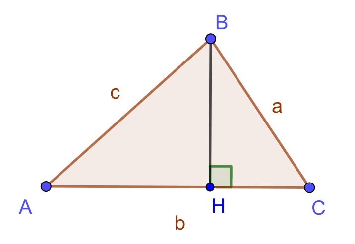

【解三角形】 20190420A
在ΔABC中,已知3a2+b2=3(acosB+bcosA)2,
则1tanA+1tanB+1tanC的最小值是()
小蒋的解答:
🍋知识点1: 看到左右都有边, 用正弦定理
3sin2A+sin2B=3(sinAcosB+sinBcosA)2
3sin2A+sin2B=3sin2(A+B)
🍋知识点2: 看到两角和, 用换角公式
3sin2A+sin2B=3sin2C
🍋知识点3: 看到左右两边都是sin, 用正弦定理
3a2+b2=3c2
🍋知识点4: 看到有很多边的平方, 用余弦定理
3c2−b2=3a2=3(c2+b2−2cb·cosA)
整理得:cosA=2b3c⟨1式⟩
3a2+b2=3c2=3(a2+b2−2ab·cosC)
整理得:cosC=b3a⟨2式⟩
易得:A,C均为锐角
当题意涉及很多tan时, 可以考虑作图, 设BH=h

cosA=AHc,结合⟨1式⟩,得AH=2b3
∴tanA=BHAH=h2b3=3h2b,为方便可设tanA=k
cosC=CHa,结合⟨2式⟩,得CH=b3
∴tanC=BHCH=hb3=3hb,得tanC=2k
tanB=−tan(π−B)=−tan(A+C)=−tanA+tanC1−tanAtanC=tanA+tanCtanAtanC−1
得tanB=k+2kk×2k−1=3k2k2−1
化简题意所求
1tanA+1tanB+1tanC
=1k+2k2−13k+12k
=4k2+76k
=2k3+76k
🍋知识点5: 基本不等式
≥22k3·76k‾‾‾‾‾‾‾√=27√3,当且仅当2k3=76k时等号成立
即当k=7√2,也就是3h2b=7√2,可以取到
∴1tanA+1tanB+1tanC的最小值是27√3